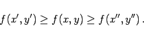

Inhalt Index DeskTop Bronstein

 Funktionen und ihre Darstellung Funktionen von mehreren Veränderlichen Eigenschaften stetiger Funktionen
Funktionen und ihre Darstellung Funktionen von mehreren Veränderlichen Eigenschaften stetiger Funktionen


Wenn eine Funktion f(x,y) in einem abgeschlossenen und beschränkten Gebiet stetig ist, dann existiert in diesem Gebiet mindestens ein Punkt (x',y') derart, daß der Wert f(x',y') größer als alle übrigen Werte von f(x,y) in diesem Gebiet ist. Außerdem existiert dann mindestens ein Punkt (x'',y''), für den der Wert f(x'',y'') kleiner als alle übrigen Werte von f(x,y) in diesem Gebiet ist. Für einen beliebigen Punkt (x,y) dieses Gebietes gilt
|  | (2.283) |